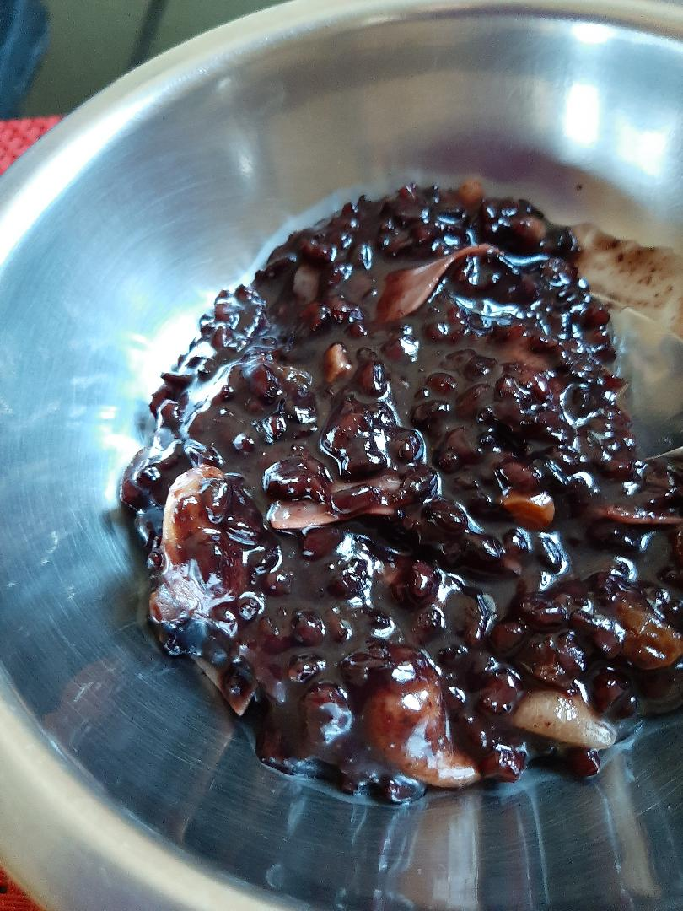

Ingredients
- Black rice 1/2 cup soaked overnight
- Jaggery 3/4 cup
- 2 1/2 water
- Pinch of salt
- Cardamom 2 whole
- 1 Tbsp of Ghee
- 15 Cashews
- 15 Raisins
Steps
- Soak the 1/2 cup black rice with 1 cup of water
- Add the overnight soaked blackrice with water
in the vessel. Add 1 and 1/2 cup water
- Take a pressure cooker. Add 1/2 cup of water
- Put the vessel with rice inside the pressure cooker
- Add a pinch of salt
- close the lid. Wait for the steam to come.
Then put the weight
- reduce the flame to 4. Cook it for 1/2 hr
and switch off the flame
- Take the Cardamom in pestle and mortal and powder it nicely
- In a frying pan add ghee to it. Fry Cashews
- Add raisins. Wait till in grows big in size
- Switch off the flame. Open the pressure cooker
when the pressure is released. Add jaggery to it
- Switch on the stove. Mix it well till the jaggery mixes well
- Finally add the roased cashews and raisins